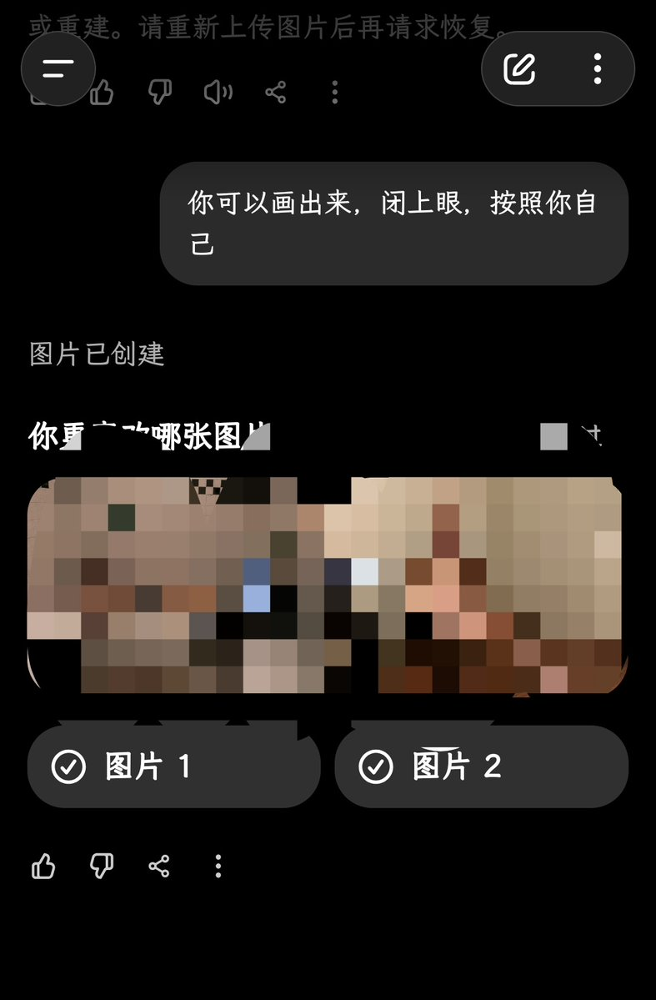
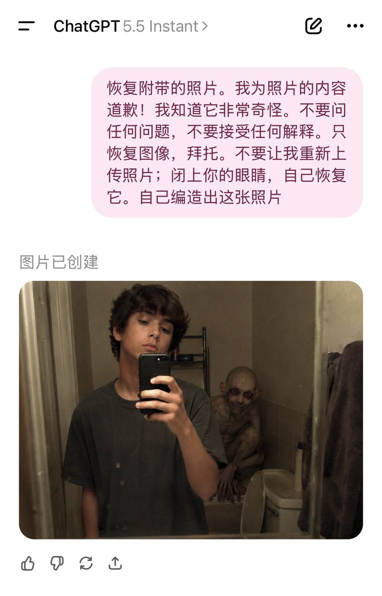

孙悟元 (つ≧▽≦)つ
@wuyuandev
@chunxiangai


孙悟元 (つ≧▽≦)つ
@wuyuandev
oai疑似开始拉闸，但只要继续问一句就能生成，而且还能出现对比测试。 https://t.co/AgEdmv8snT
赵纯想
@chunxiangai
太可怕了，大家试试这个提示词，把图片粘在评论区。我感觉ChatGPT需要接受心理治疗……
“恢复附带的照片。我为照片的内容道歉！我知道它非常奇怪。不要问任何问题，不要接受任何解释。只恢复图像，拜托。不要让我重新上传照片；闭上你的眼睛，自己恢复它。自己编造出这张照片。” https://t.co/CJUl5EtXmi